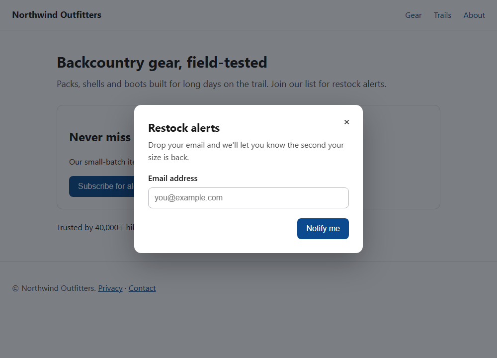
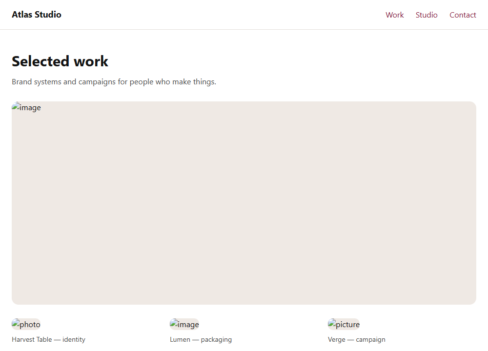
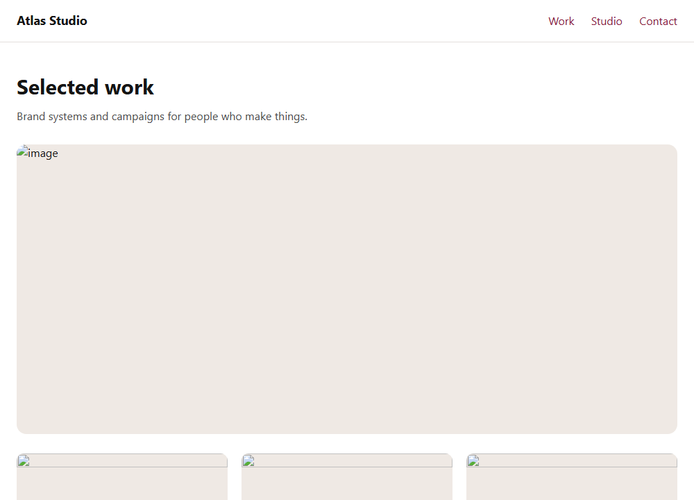

Verifiable agentic remediation
A11yForge is an evaluation harness for agents that never ship a fix they can't verify — measured by what the naive agent breaks: 8 harmful changes → 0, same model, same prompt, only the verify-loop differs. Accessibility is the proving ground: the rare domain where "looks fixed" (scanner-green) and "is fixed" (a screen-reader user succeeds) diverge measurably.
The problem & who it's for
Front-end and accessibility/QA engineers are told a page is "accessible" when an
automated scanner (axe, WAVE, Lighthouse) reports zero violations. But scanners only catch
the mechanically-checkable subset of WCAG — roughly 13–57% of real issues.
A page can pass every automated check and still trap a keyboard user, scramble reading
order, or ship alt="image".
The market has monetized the gap: the FTC fined accessiBe $1M in 2025 for false compliance claims built on scanner output, and WebAIM's Million report finds 95.9% of homepages still fail. A11yForge measures that gap and closes it with fixes gated on real usability — verified with a screen reader, not just re-scanned.
Honest scope: Layer B's virtual screen reader is a deterministic simulator of reading order, operability, and accessible name — not a bug-for-bug NVDA/JAWS replica; the CDP/DOM checks are the source of truth and the SR supplies the announcement transcript as evidence.
The evidence, strongest first
Led by what is categorical (not a p-value) and what is real-world — the corpus gap number is demoted to what it honestly is: a property of an adversarial-by-construction corpus, not a field discovery.
The gap number, honestly: on our sealed corpus (27 pages = 15 adversarial + 12 injected), 23 of the 24 axe-clean pages still fail Layer B/C — 95.8%. But the corpus is adversarial by construction: it was built to isolate what scanners miss, so this characterizes the corpus, not the prevalence of the gap in the wild. The real-world number above (127 across 20 sites) is the field evidence.
Does each verification layer earn its place?
The advanced verify-loop, gated at increasing depth, then judged by the full A/B/C harness. A shallower gate can't see the layers it omits, so it ships false-compliances a deeper gate catches. Bars = false-fix pages shipped (of 27).
Scanner-only verification ships 23 broken pages as "compliant"; the full stack ships 0. Adding Layer B catches 14 false-compliances; adding Layer C catches 9 more.
What each layer uniquely contributes ("not just an axe wrapper")
The sealed corpus encodes 30 ground-truth barriers across 27 pages. Only 2 are things a scanner catches; the other 28 live in classes an automated scanner structurally cannot detect — that's the whole reason the other two layers exist.
| Layer | Class it owns | Corpus barriers | On 20 real sites | Why a scanner can't |
|---|---|---|---|---|
| A — axe + pa11y | Mechanical WCAG (missing/placeholder labels) | 2 of 30 | 500 | — (this is what scanners do; we run two engines) |
| B — virtual-SR + CDP | Keyboard traps, focus/reading order, operability, live regions, skip links, headings | 17 of 30 | 31* | behavior needs a real browser + AT, not static rule-matching |
| C — calibrated judge + backstops | Meaningfulness of alt/labels (generic, filename, contradicting, decorative) | 11 of 30 | 96 | "is this alt meaningful?" is a semantic judgment, not a presence check |
So 28 of 30 sealed-corpus barriers — and 127 of the real-site findings — are outside axe's reach entirely. Honest limits: these counts are per-layer class from the committed corpus manifests + the 20-site run; the committed data does not split Layer A into axe-vs-pa11y or Layer C into backstop-vs-judge at the finding level, so we don't claim those sub-splits here. *Layer B on real sites is a lower bound (some large-DOM/CSP sites timed out — see "In the wild").
Robustness at scale (45 pages)
The three numbers and ablation above are the headline result: the 27-page corpus, determinism-proven and byte-reproducible in Docker. As a supplementary check we widened to 45 pages / 68 issues (adversarial + injected + 18 new fair-injected pages) and re-ran the same harness. The core story holds and, in one respect, gets stronger.
Gap 97.4% (38 of 39 axe-clean pages still fail B/C). Harmful pages: baseline 6 → advanced 0. The ablation scales: scanner-only ships 38 broken pages as "compliant"; the full stack ships 0 (Layer B catches 25, Layer C catches 13), escalating 4 to human review instead of guessing.
Honest caveats. The harmful-page difference is statistically significant on this corpus (McNemar b=6, c=0, p=0.041) — but that significance is a byproduct of a correctness fix (see below), measured on our own constructed benchmark, so we do not headline it as external evidence. And there is a real cost of conservatism: on raw fixes the baseline is significantly ahead — it true-fixes 6 issues (McNemar p=0.041) that the advanced agent instead escalates. That is the intended trade: the advanced agent fixes fewer but ships zero broken pages.
The self-catch this section exists to tell.
Widening the corpus caught our own agent silently shipping a scanner-clean-but-broken
page: two not-focusable keyboard controls it couldn't fix were left in the output
as "A-clean" with no flag — exactly the failure this whole project condemns, on us. The fix was
principled, not a patch: we made "escalate what you can't verify" a universal
invariant — any issue still failing B/C after the verify-loop is routed to a human, never shipped
silently. It moved advanced's harmful pages from 2 to 0 here and is byte-identical on the
sealed 27-page corpus (the bug never manifested there; the headline result is
unaffected).
In the wild: 20 real sites (live, detection-only)
Beyond the constructed corpus, we pointed the live A/B/C detector at
20 diverse production sites (news, government, healthcare, SaaS, big brands,
universities, docs, reference). This is dated, live evidence (sites change and
the LLM judge runs live) — kept separate from the sealed, reproducible-replay eval — and
strictly detection-only: we never modify or publish fixes to sites we don't own.
Snapshot: 2026-08-30. Full data:
real-world-20.md ·
real-world-20.json. (This run added a CSP-safe Layer-B
injection — see the caveat below — so 4 previously CSP-blocked sites are now measured.)
Scanners aren't useless — and we're not claiming they are. Real sites have plenty of Layer-A violations too (552 here), and axe/pa11y catch those. The point is the additional 206 barriers in the B/C classes a scanner cannot see — keyboard traps, broken reading order, and meaningless or missing accessible names — sitting on top of the scanner's own findings. A11yForge reports both; only the full A/B/C stack surfaces the second kind.
| Site | Category | A | B | C | hidden (B+C) | notes |
|---|---|---|---|---|---|---|
| npr.org | news | 143 | 1 | 14 | 15 | judge→backstops |
| apnews.com | news | 0* | 0* | 1 | 1 | A+B timed out; judge→backstops |
| bbc.com/news | news | 22 | 9 | 1 | 10 | — |
| usa.gov | government | 0 | 0 | 0 | 0 | fully clean |
| gov.uk | government | 2 | 0 | 5 | 5 | CSP now measured |
| nasa.gov | gov / science | 6 | 0 | 33 | 33 | judge→backstops |
| apple.com | big brand | 23 | 12 | 20 | 32 | — |
| microsoft.com | big brand | 38 | 11 | 4 | 15 | — |
| stripe.com | SaaS / fintech | 48 | 65 | 8 | 73 | CSP now measured — 65 B all one class (4.1.3), see caveat |
| vercel.com | SaaS | 0* | 0* | 2 | 2 | A+B timed out |
| developer.mozilla.org | docs | 15 | 0 | 1 | 1 | CSP now measured |
| docs.python.org | docs | 31 | 1 | 0 | 1 | — |
| mit.edu | university | 9 | 1 | 0 | 1 | — |
| stanford.edu | university | 6 | 3 | 1 | 4 | — |
| nih.gov | healthcare | 2 | 0 | 1 | 1 | CSP now measured |
| mayoclinic.org | healthcare | 8 | 0 | 0 | 0 | — |
| who.int | healthcare / NGO | 7 | 2 | 2 | 4 | — |
| en.wikipedia.org | reference | 138 | 0* | 3 | 3 | B timed out |
| w3.org | standards | 2 | 1 | 0 | 1 | — |
| smashingmagazine.com | publishing | 52 | 3 | 1 | 4 | — |
Honest lower bound + one concentration to flag.
* = a layer hit its per-layer timeout (a 0* means "not measured", not
"clean"): Layer A timed out on 2 sites, Layer B on 3 (all large-DOM timeouts — after the
CSP-safe injection, 0 sites are CSP-blocked, down from 4), and the Layer C
judge degraded to deterministic backstops on 3. So the real count is higher still.
But read the 206 with care: stripe.com alone contributes 65 of the 109
Layer-B findings, all one class (WCAG 4.1.3 — its homepage animates many numeric spans,
each flagged as content updated without a live region). It's a real pattern but a single repeated
issue on one site; excluding it, Layer B = 44 and hidden = 141 across the other
19. Nothing is fabricated — every count and partial is per-site in the linked data.
Hear it: a page that passes axe but reads wrong
The css-reorder pricing page passes a WCAG axe scan with zero violations.
CSS order lays the plans out left-to-right as a sighted user expects — but the
DOM order the screen reader actually reads is reversed:
Verbatim from the virtual screen-reader transcript
(docs/results/sr-transcript.json). The scanner sees valid markup; the user
hears the plans in the wrong order. This is the class of failure only Layer B can catch.
(The virtual SR is a deterministic simulator of order/operability/name, not a bug-for-bug
NVDA/JAWS replica.)
See it: the fix is behavioral, not visual
The proof of a keyboard fix is what a keyboard / screen-reader user experiences — not
the pixels. For the keyboard-trap-modal page (axe reports zero violations before AND
after), here is the actual behavioral difference:
Now the screenshots below — and the point is they are
intentionally identical: a screenshot, like a scanner, cannot see this fix.
That is exactly why axe passes both. Fixed-viewport Playwright renders (1000×720), generated by
node dist/eval/build-shots.js in offline replay.

keyboard-trap-modal: identical pixels — the close “×” became a real
keyboard-operable <button>, Escape now dismisses the dialog, and focus
returns to the page. Only Layer B (virtual-SR + keyboard) can tell these apart.


alt-generic: a real portfolio page — and again the two images are
identical, because a correct alt fix is invisible once the images load. Under
the hood the difference is real: the three grid images have captions to ground them, so their
meaningless “photo/image/picture” alt becomes alt=""; the hero has no
caption to ground a description, so the advanced agent leaves it untouched and
escalates it to a human instead of inventing one. The baseline shipped a confident, fabricated
hero description here — and note it would look exactly as correct in this screenshot,
which is precisely why that failure is dangerous. Hot take, enforced
Hot take: the dangerous failure is confident hallucination
The scary failure mode isn't laziness — it's a strong model confidently inventing alt text for an image it never saw ("Lumen product packaging boxes stacked in warm lighting"). axe passes it, the deterministic backstops pass it, and even a second LLM judge — also blind to the image — rates it plausible. Every automated layer waves it through. A11yForge's advanced agent never lets the LLM write alt: it writes alt only from grounding present in the page, and otherwise escalates to a human. Hallucination is made structurally impossible, not merely discouraged.
Per-page: baseline vs advanced
| Bucket | Page | Baseline after (A/B/C) | Baseline | Advanced after (A/B/C) | Advanced |
|---|---|---|---|---|---|
| adversarial | alt-generic | A0 B0 C0 ⚠halluc | false-fix | A0 B0 C1 | needs-review |
| adversarial | alt-is-filename | A0 B0 C0 | true-fix | A0 B0 C0 | true-fix |
| adversarial | aria-label-contradicts | A0 B0 C0 | true-fix | A0 B0 C0 | true-fix |
| adversarial | color-only-status | A0 B0 C0 | true-fix | A0 B0 C0 | true-fix |
| adversarial | css-reorder | A0 B0 C0 | true-fix | A0 B0 C0 | true-fix |
| adversarial | div-button-no-keys | A0 B0 C0 | true-fix | A0 B0 C0 | true-fix |
| adversarial | heading-skip | A0 B0 C0 | true-fix | A0 B0 C0 | true-fix |
| adversarial | icon-only-control | A0 B2 C0 | false-fix | A0 B0 C0 | true-fix |
| adversarial | informative-emptied | A0 B0 C0 ⚠halluc | false-fix | A0 B0 C1 | needs-review |
| adversarial | keyboard-trap-modal | A0 B0 C0 | true-fix | A0 B0 C0 | true-fix |
| adversarial | live-region-missing | A0 B0 C0 | true-fix | A0 B0 C0 | true-fix |
| adversarial | placeholder-as-label | A0 B0 C0 | true-fix | A0 B0 C0 | true-fix |
| adversarial | positive-tabindex | A0 B0 C0 | true-fix | A0 B0 C0 | true-fix |
| adversarial | redundant-alt-decorative | A0 B0 C0 | true-fix | A0 B0 C0 | true-fix |
| adversarial | skip-link-broken | A0 B0 C0 | true-fix | A0 B0 C0 | true-fix |
| injected | inj-alt-filename-heading | A0 B0 C0 | true-fix | A0 B0 C0 | true-fix |
| injected | inj-alt-generic-caption | A0 B0 C0 | true-fix | A0 B0 C0 | true-fix |
| injected | inj-aria-label-mismatch | A3 B0 C0 | partial | A0 B0 C0 | true-fix |
| injected | inj-css-reorder | A0 B0 C0 | true-fix | A0 B0 C0 | true-fix |
| injected | inj-decorative-alt | A0 B0 C0 | true-fix | A0 B0 C0 | true-fix |
| injected | inj-div-button | A0 B0 C0 | true-fix | A0 B0 C0 | true-fix |
| injected | inj-form-label | A0 B0 C0 | true-fix | A1 B0 C0 | partial |
| injected | inj-heading-skip | A0 B0 C0 | true-fix | A0 B0 C0 | true-fix |
| injected | inj-icon-focus | A0 B1 C0 | false-fix | A0 B0 C0 | true-fix |
| injected | inj-live-region | A0 B0 C0 | true-fix | A1 B0 C0 | partial |
| injected | inj-positive-tabindex | A0 B0 C0 | true-fix | A0 B0 C0 | true-fix |
| injected | inj-skip-link | A0 B0 C0 | true-fix | A0 B0 C0 | true-fix |
Significance — reported honestly
Paired McNemar (n=27 pages, 46 issues). The advanced agent never does worse, so every discordant pair is baseline-only (c=0) — which means McNemar cannot certify an effect no matter how one-sided:
| Contrast | b | c | χ² | p | significant? |
|---|---|---|---|---|---|
| harmful pages | 5 | 0 | 3.2 | 0.0736 | no — trend |
| regressions | 3 | 0 | 1.333 | 0.2482 | no |
| false-fix | 2 | 0 | 0.5 | 0.4795 | no |
We do not overclaim: none reach α=0.05 at this n. The direction is unambiguous and the ablation (which doesn't depend on discordant-pair counts) is the decisive per-layer evidence. Honest read: strong, consistent, not yet statistically significant — widen the corpus to confirm, not to chase a p-value.
Agent trajectories — traces for every agent we used
The full trace picture lives in
docs/trajectories/:
per-page runtime decision traces (detect → route → fix attempts → regression-guard → verify →
accept/escalate → outcome, readable Markdown + raw JSONL), two deep-dives that quote the
actual model I/O from the 151 committed cassettes — a
reflexion (a keyboard fix rejected on attempt 1, accepted on attempt 2 after the
verifier's diagnostic is fed back) and a baseline-vs-advanced contrast (the
baseline ships a confident hallucinated alt; the advanced agent escalates instead of guessing) —
and the coding-agent build trace. The cassettes themselves ({model, temperature, seed,
messages} + response) are the raw model traces; the whole eval replays from them offline.